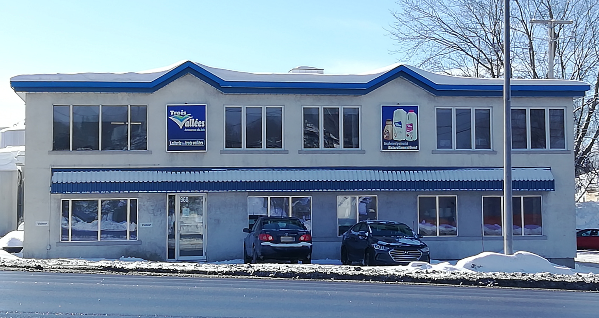
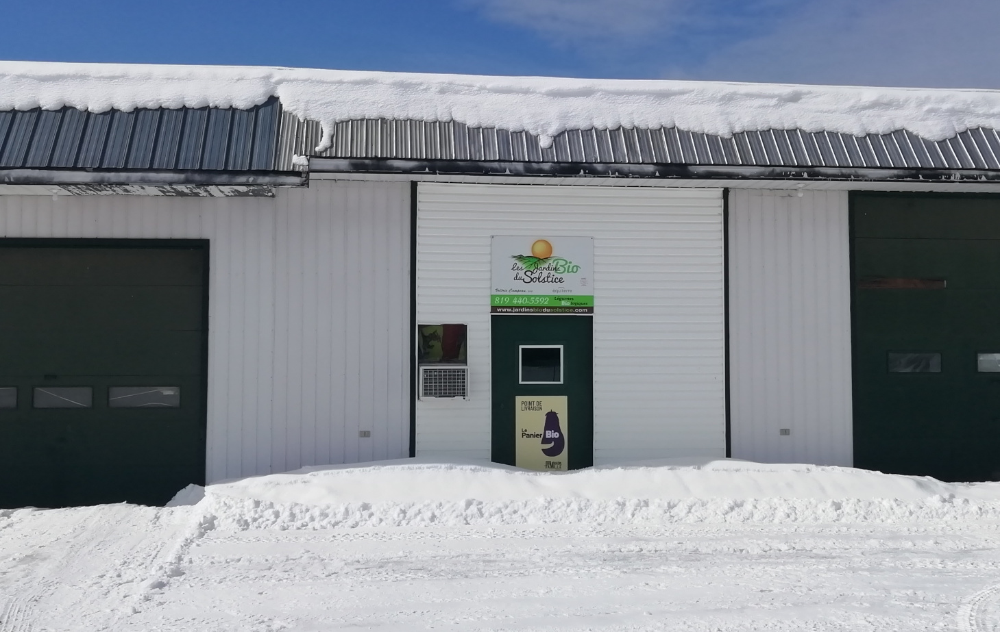

Laiterie des trois vallées
Des produits laitiers faits avec du lait de la région!
Cette usine de transformation laitière, initialement laiterie familiale fondée par Émile Bélanger est devenue des décennies plus tard la Laiterie des trois vallées. Bien que les visites de l’usine ne soient pas autorisées, vous trouverez tous leurs produits dans les épiceries et dépanneurs de Mont-Laurier. Du lait écrémé à la crème à café, en passant par la crème à fouetter et à cuisson, vous trouverez certainement le produit qu’il vous faut pour créer des desserts et repas gourmands. Ou vous pourrez tout simplement profiter des magnifiques paysages de Mont-Laurier en dégustant un bon lait au chocolat.
Les Jardins Bio du Solstice
Venez profiter d’un panier bio et local!
Fermé durant l’hiver, les semences sont préparées au printemps pour obtenir les plants. Ceux-ci seront transplantés lorsque les températures s’adouciront. À partir de l’été, les légumes seront prêts à être récoltés et dégustés. Vous trouverez les légumes frais directement à la ferme, de juin à fin octobre ou dans quelques épiceries du coin. Les œufs sont disponibles à l’année dans plusieurs épiceries et dépanneurs de Mont-Laurier. Vous pourrez aussi vous approvisionner en plants à faire pousser chez vous!
Ben Bagel

Des bagels et produits de boulangerie savoureux à souhait!
Chez Ben Bagel, vous trouverez des produits frais du jour confectionnés et cuits sur place. Ceux-ci sont faits, dans la mesure du possible, avec des produits locaux. À partir du comptoir, vous pourrez observer le four et voir le boulanger à l’œuvre, ce qui ne manquera pas de vous mettre l’eau à la bouche. Faites un tour chez Ben Bagel pour découvrir de délicieux bagels, mais aussi les croissants et leur savoureux sandwichs, entre autres.